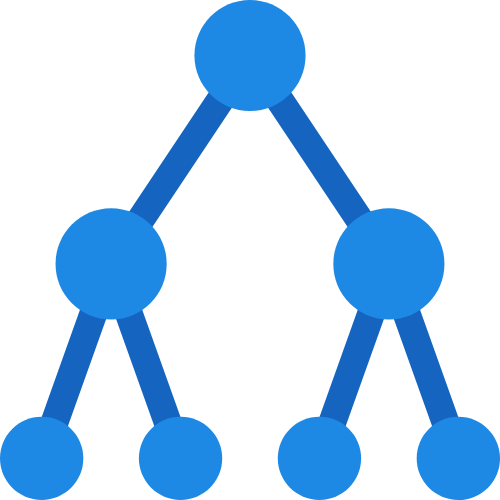
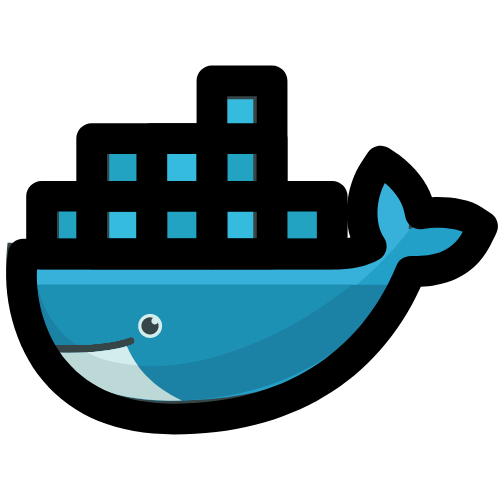
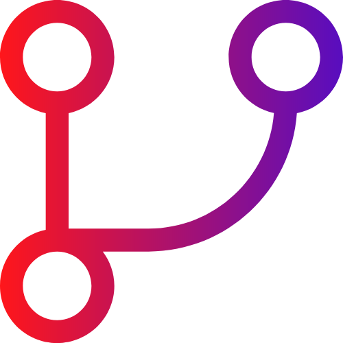
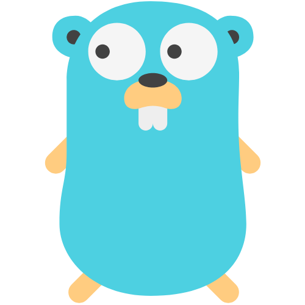
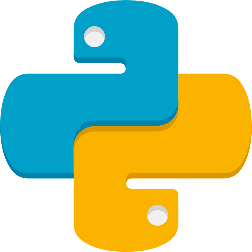
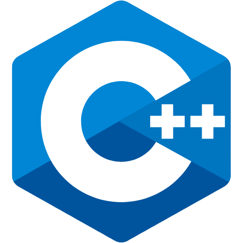
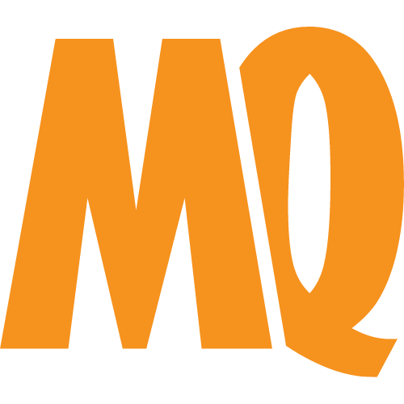
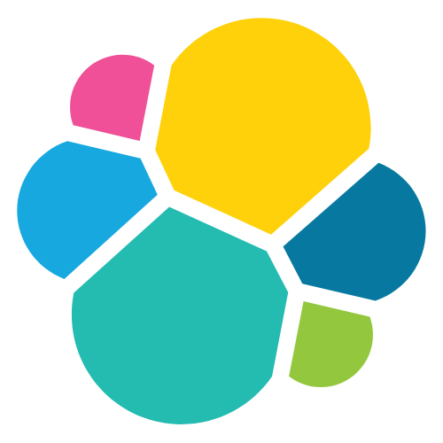

- Hello & Welcome -
Thank you for stopping by to see what I've created here. I just wanted to hello and give a little introduction before you went on your way through the rest of my site. My name is Ayvaz Bagautdinov, I am 21 years old, residing in Saint-Petersburg, Russia and progressing as a DevSecOps Specialist for a little over five years now. I started with virtualization (VMware), then I learned how to deploy Docker images....
A Dive Inside...
I am constantly learning something new, I like new technologies, how the old long is replaced by the new fast.The sections covering my Education and Projects contain more information about my training and creations. About where I worked, you can see at the bottom, in my section Work , if you want.
The skills I have acquired over the years can be seen in my collection of Qualities. Although not everything is listed, you can get an idea of some of the abilities I possess. If you would like Contact to contact me, please do so in any way indicated below. Below is a pdf version of my resume with my media links and contact details. My intention is not to conquer the world, but simply to create a comfortable life by creating creative and attractive services.
Educational Value...
After graduation, my educational paths became more exciting and intense. My choice fell on a secondary vocational school, where I studied the specialty Information Security. My first attempts to train at "Infotecs" showed that I still have a lot to learn. This was a kind of impetus to the decision to deepen their knowledge.
Then I decided to enroll in ITMO University at the Faculty of Information Security. Here the world of knowledge revealed itself to me in all its glory. I have deepened my basic knowledge and acquired new levels of competence. Together with friends, we are actively engaged in CTF, using advanced technologies such as Active Directory, Linux, Kerberos, Nginx, SQL, Python, C/C++. Now I have delved into Docker, Kubernetes, ELK. I want to delve into CI/CD soon.
Projects Created...
I've done various projects in my life. Most of all, I liked to write automated tools for the pentest, so that one command outputs all the information about the system. I wrote scripts on Golang to send GET POST requests to servers. Wrote a backend on Golang. I also have about 500 solved problems on Leetcode and 40 hacked machines on HackTheBox. With a team from the university, we did CTF projects, went to forums, used to do computer vision projects. If you are interested, you can take a look at my github and profile on leetcode.
A History Of Work...
In 2021, I worked as a system administrator at a hospital. There were such tasks as setting up networks, restoring Windows systems, setting up a mail server. There was a system in the medical sector that needed to be able to administer, many did not understand it, I figured it out. There was no micro-service architecture, it was a monolith. No dockers, no virtualization. There was a website, there was a mail server, SQL databases. All of this had to be monitored. There were also unpopular software, such as Machaon or X-ray, which often broke down and had to be configured anew. I worked here for about six months.
In 2022, I tried to pass various interviews, sometimes I had to sign a contract. The fact is that studying was very difficult this year and I could not devote all the time to my development, but I will continue to advance, delve into new technologies, improve my skills.
In the year 2023, as colleagues in goals, I made efforts to promote our CTF club. In parallel, my efforts were aimed at overcoming the Yandex thresholds through the interview stage, which, unfortunately, did not submit to me. In the same period, fate guided me on the path of an internship at Ozon Tech Route 256, where I deeply immersed myself in Golang programming. Joining this, two additional internships appeared: first at Deteact, where I expanded my knowledge in the field of vulnerability analysis, and then at Positive Technologies, where I honed the art of data protection. Thus, my days and nights were absorbed in the search for knowledge and their practical development. In this relentless pursuit of development, stingy with sleep, I continued to chest forward, creating a mosaic of my own professional growth and personal development.
Skills Possessed...
Throughout the years, one gains skills and qualities that help construct abilities to be successful at life and survive in the ever changing world. Some retained, others not, all add to the learning experience, from child to adult life. Listed would be some of those qualities that I myself have come across. Some have more use than others, but they all add up in one way or another.
- Linux
- Active Directory
- Docker
- Kubernetes
- Git
- JavaScript
- Go
- Python
- Powershell
- C++
- MySQL
- RabbitMQ
- Elastic
- OpenVPN
- VS Code
Ways Of Contact...
If you would like to contact me, by all means please do, reach out if you'd like. Check out some of my code and projects on GitHub, drop by LinkedIn, or send an email my way. If you'd like, you can grab my resume below as well. I look forward to meeting new people, making new friends.